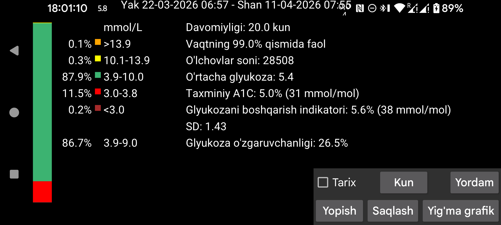
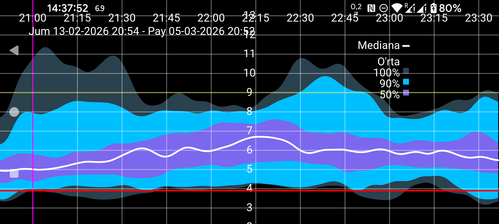

ar be de es fr hi it nl pl pt ru tr uk uz zh en
Bu bo‘lim AGP asosidagi ayrim statistikani kichik o‘zgartirishlar bilan ko‘rsatadi.
Tahlil qilinadigan kunlar sonini Kunlar tugmasi bilan o‘zgartirish mumkin. Davr ekrandagi o‘ng chekka vaqt bilan tugaydi va ko‘rsatilgan kunlar sonicha orqaga qarab olinadi. Barcha ma’lumotlar faqat sensordan Bluetooth orqali har daqiqada olingan glyukoza qiymatlariga — Juggluco dagi oqim ga asoslanadi.
Ekran chap tomonida o‘lchovlarning ma’lum glyukoza diapazonlariga tushgan foizi ko‘rsatiladi. Standart diapazonlar doim ko‘rsatiladi. Agar chap menyu→Sozlamalar→Ko‘rsatish bo‘limida nostandart maqsad diapazoni belgilansa, shu diapazon uchun vaqt-in-range ham standart diapazonlar ostida ko‘rsatiladi.
Faol vaqt foizi: Juggluco sensordan glyukoza qiymatlarini qabul qilgan vaqt ulushi.
Estimated A1C: o‘rtacha glyukoza asosida eski formula (Nathan va boshq., 2008) bilan hisoblangan HbA1c taxmini. Bu ko‘rsatkich Abbott Libre 2 ilovasidagi qiymatni qidirayotganlar uchun ko‘rsatiladi. 2018 yildan beri uning o‘rnini GMI bosgan.
Glucose Management Indicator (GMI): o‘rtacha glyukozadan umumiy qo‘llanadigan formula bilan hisoblanadi. Bu HbA1c (A1c) ning foiz va mmol/mol ko‘rinishidagi empirik bashoratidir. Muallif fikricha ba’zan Estimated A1C yaxshiroq bashorat qiladi, lekin Abbott Libre 3 ilovasida GMI ishlatiladi.
Glyukoza o‘zgaruvchanligi: %CV=(SD/o‘rtacha)*100% koeffitsienti. Qiymat qancha katta bo‘lsa, glyukoza qiymatlari o‘rtachadan shuncha uzoq tarqalgan bo‘ladi.
Saqlash: ko‘rsatilgan kunlar uchun glyukoza qiymatlari hisobotini tayyorlaydi. Hisobot ichida statistika, umumiy grafik va alohida kunlar tasvirlari bo‘ladi. Uni PDF ga chop etib, shifokorga e‑mail orqali yuborish mumkin. Buning uchun chap menyu→Sozlamalar→Ma’lumot almashish→Veb server faol bo‘lishi kerak. Hisobot brauzerda http://127.0.0.1:17580/x/report manzilini ochadi.
Yig‘ma grafik (kamida 9 kunlik oqim qiymatlari bo‘lganda ko‘rinadi): shu davrdagi barcha oqim qiymatlari kunning har bir daqiqasi uchun glyukozaning taqsimlanishini ko‘rsatadigan kompozit grafik chizish uchun ishlatiladi. Qora yoki oq median chiziq har daqiqada qiymatlarning 50 foizi undan past yotadigan glyukozani ko‘rsatadi. Eng och ko‘k rang barcha qiymatlar yotgan maydonni bildiradi. Sal to‘qroq ko‘k median atrofidagi 90% maydonni, eng to‘q ko‘k esa median atrofidagi 50% maydonni ko‘rsatadi. Agar bu maydon chegaralarini chiziq deb qarasangiz, ular mos ravishda 0%, 5%, 25%, 50%, 75%, 95% va 100% nuqtalarni bildiradi.
Chiroyliroq ko‘rinish uchun egri chiziq binomial filtr bilan silliqlangan.
Ekranga bosish Yig‘ma grafikni yopadi. Faqat chap yoki o‘ng chetga bosilsa, grafik kun bo‘yicha orqaga yoki oldinga siljiydi. Grafikni skroll qilish orqali ham surish mumkin. Vaqt masshtabini ikki barmoqni bir-biriga yaqinlashtirish yoki uzoqlashtirish bilan o‘zgartirish mumkin.